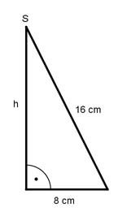

Aufgabe 243 Welches Volumen V hat ein Kegel, der aus einem halbkreisförmigen Blech mit einem Radius von 16 cm gebogen wird? Der Umfang des Halbkreises entspricht dem Umfang des Kegelgrundkreises. 2 * л * r UHalbkreis = ----------- = л * 16 cm = 50,24 cm 2 UKegel = 2 * л * rKegel 50,24 cm = 2 * л * rKegel |:2*л 50,24 cm rKegel = ------------ = 8 cm 2 * л  Satz von Pythagoras zur Berechnung der Kegelhöhe h: 16² cm² = h² + 8² cm² | -8² cm² h² = 16² cm² - 8² cm² = 192 cm² |√ h = 13,86 cm л * rKegel² * h л * 8² cm * 13,86 cm V = ----------------- = --------------------------- = 928,4 cm³ 3 3